É uma doença inflamatória que acomete principalmente a pele, músculos esqueléticos e vasos sangüíneos, associada com fraqueza muscular. Raramente afeta outros órgãos. O termo polimiosite está reservado para casos nos quais a inflamação cutânea está ausente. Nos adultos a doença pode estar associada com um carcinoma subjacente ou linfoma.
Epidemiologia
É uma desordem rara, que acomete todas as raças. A maioria dos casos, em adultos, ocorre entre 40 e 60 anos e na criança, antes dos 10 anos. No adulto, predomina em mulheres (2:1). Na criança, a incidência é a mesma em ambos os sexos.
Etiopatogenia
A etiologia da dermatomiosite e polimiosite permanece desconhecida. Sugere-se a participação de fatores autoimunes. O fator genético é sugerido pela maior incidência de HLA-B14 e B4 na forma adulta e HLA-B8 e DR3, em ambas as formas. Acredita-se que fatores infecciosos virais, neoplasias e drogas poderiam desencadear uma resposta imunológica contra a célula muscular estriada. Estudos com microscopia eletrônica tem revelado estruturas paramixovírus-símile nos vasos sangüíneos da pele e músculos, assim como nos linfócitos do infiltrado inflamatório de pacientes com dermatomiosite. Na forma adulta, a associação com neoplasias ocorre em 10 a 30% dos casos. Os tumores comumente implicados são de: mama, pulmão, ovário, estômago, cólon, útero e nasofaringe. Usualmente a doença piora com a progressão da neoplasia. Têm sido reportados casos de dermatomiosite após uso de sulfonamidas, penicilina, progesterona, isoniazida e D-penicilamina.
Anticorpos específicos contra a tRNA sintetase (anti Jo-1, anti-PL7, anti-PL12, anti- EJ, anti-0J) e anticorpos antinucleares são observados em grande número de pacientes.
Na polimiosite a maioria das células no infiltrado inflamatório são linfócitos e macrófagos, sugerindo participação da imunidade celular. Depósitos de IgG, IgM e C3 têm sido observados no músculo estriado dos vasos sangüíneos especialmente na dermatomiosite infantil. Acredita-se que na criança, os imunocomplexos provocariam uma vasculite necrotizante. Não há dados consistentes entre a associação de dermatopolimiosite e implante de colágeno. Assim como, ocorreria um discreto risco de doenças do tecido conjuntivo entre as mulheres que fazem implante mamário de silicone.
Manifestações clínicas
Manifestações cutâneas. Após o acometimento muscular, a pele é o segundo órgão mais afetado, seguido dos pulmões e trato digestivo. Podem preceder a fraqueza muscular em 56% dos casos. Em cerca de 20% dos casos as manifestações cutâneas podem preceder as musculares e persistirem, isoladamente, por até 2 anos, quando é denominada dermatomiosite amiopática. Caracteristicamente, consistem em:
Eritema heliotrópico: eritema vermelho violáceo da face, acometendo principalmente as pálpebras acompanhado de edema periorbitário.
Pápulas de Gottron: são patognomônicas da dermatomiosite. Consistem em lesões papulosas eritematosas ou violáceas que podem confluir formando placas, que com o tempo tornam-se atróficas e despigmentadas na região dorsal das articulações interfalangeanas e, algumas vezes, nos joelhos e cotovelos.
Erupção máculo-papular eritêmato-escamosa, freqüentemente fotossensível, que afeta fronte, regiões malares e superfícies extensoras das extremidades.
Lesões poiquilodérmicas que podem desenvolver-se no tronco e porções proximais dos braços.
Telangiectasia e eritema periungueal.
Sinal do coldre – Pacientes com dermatomiosite também podem ter poiquiloderma nas partes laterais das coxas, denominado “Sinal de Holster”. Não está claro por que essa manifestação cutânea ocorre neste local classicamente protegido da exposição à luz.
Alopécia difusa, lesões urticarianas, bolhosas ou esclerodermiformes e fenômeno de Raynaud (10% dos adultos), livedo reticular também podem ser observados.
Calcificações a nível de planos aponeuróticos e subcutâneos é uma complicação tardia que ocorre em cerca de 40 a 70% dos casos de dermatomiosite juvenil. Elas Podem ulcerar e se infectar secundariamente. Outras manifestações que ocorrem freqüentemente, na criança, são as vasculites cutâneas de extremidades, paniculites, lipodistrofia e hipertricose. Artralgias, artrite e acometimento sistêmico, não são observados na dermatomiosite juvenil, diferentemente do que verifica-se no adulto.
Manifestações musculares. O acometimento muscular, quase sempre simétrico e bilateral, na maioria das vezes precede as manifestações cutâneas, mas pode preceder por meses, acompanhar ou seguir as mesmas. Os músculos mais atingidos são: os músculos estriados proximais dos membros, cintura escapular e pélvica, faringe e língua. Os sintomas iniciais são incapacidade de levantar-se de uma cadeira baixa, subir escada e, pentear os cabelos e manter os braços estendidos sem apoio. Pode ocorrer disfagia (12-45%), disfonia e disartria. Dor muscular e hiperestesia são discretas ou ausentes. O envolvimento dos músculos distais é um achado tardio.
Outras manifestações: Geralmente não há evidência de doença sistêmica. Pode estar presente uma doença vascular do colágeno afetando outros órgãos. Em alguns casos podemos encontrar febre, artralgias, arritmias, sintomas de insuficiência renal (usualmente, secundária à mioglobinúria) e dispnéia, que pode ser decorrente do envolvimento cardíaco, pulmonar (fibrose pulmonar, pneumonia intersticial) ou muscular (acometimento dos músculos intercostais e diafragma). Complicações cardiorrespiratórias, infecções e malignidade são as principais causas de óbito. Cerca de 20% dos doentes morrem no primeiro ano, embora possa ocorrer recuperação completa da enfermidade.
Diagnóstico
Enzimas musculares: Os níveis das enzimas musculares, principalmente creatinina fosfoquinase (CPK), creatina urinária, transaminases (SGOT, SGPT), lactato-desidrogenase (LDHL), aldolase e fosfatase alcalina estão geralmente aumentadas e podem refletir atividade da doença, servindo como guia terapêutico. A CPK fração MM, apesar de não ser específica da degeneração muscular na dermatomiosite, é a mais sensível. Seus níveis são proporcionais à degradação muscular. É a primeira enzima a ter seus níveis aumentados e a última a normalizar-se na involução da doença, sendo utilizada para monitorização de atividade desta enfermidade. A aldolase e a creatina urinária são observadas 1 a 2 semanas após o aumento da CPK; as transaminases, 3 a 4 semanas após o início da doença; a deshidrogenase lática (DHL) e fosfatase alcalina são as últimas a elevarem seus níveis e todas estas não reproduzem a real atividade da doença. A determinação da creatina na urina de 24h é melhor indicador de atividade que a creatinina fosfoquinase sérica.
Avaliação dos autoanticorpos: A pesquisa de autoanticorpos não faz parte da rotina diagnóstica na dermatomiosite. O FAN é encontrado em apenas 5 a 20% dos pacientes, padrão salpicado ou pontilhado, em títulos baixos. Autoanticorpos Jo1, PL12, Ku e KJ não são utilizados de rotina pois são de pouco valor para se firmar o diagnóstico, embora possam chamar atenção para outras manifestações da doença com as quais eles estejam associados. Anticorpos anti-Ku estão associados com síndromes de superposição de dermatomiosite e esclerodermia sistêmica, anti-KJ com polimiosite e doença pulmonar intersticial e anti-Jo-1, com alveolite intersticial fibrosante, fenômeno de Raynaud, síndrome sica e artrite moderada. A presença de fatores antinucleares anti-Mi-2, está fortemente associados com a dermatomiosite clássica de bom prognóstico. Pesquisa do fator reumatoide, ANA, anti-Ro/SSA, anti- La/SSB e anti-RNP são realizadas para afastar outras doenças do colágeno.
Eletromiografia e ressonância magnética: Ajudam a orientar o local da biópsia. A eletromiografia também auxilia a diferenciar uma miopatia de uma desordem neurológica pura. A ressonância pode demonstrar alterações musculares antes das manifestações clínicas e do aumento da CPK, sendo considerada um exame essencial no diagnóstico da dermatomiosite.
Biópsia: A biópsia cutânea é inespecífica, mas pode lembrar o lúpus. Não ajuda no diagnóstico. A biópsia de músculo é geralmente uma prova diagnóstica definitiva desde que seja feita num feixe muscular acometido.
Tratamento
É necessário repouso nos pacientes com doença muscular em atividade. A fisioterapia ativa deve ser iniciada após regressão da inflamação. Prednisona na dose de 1mg/Kg/dia em adultos e 1,5 a 2 mg/Kg/dia em crianças, é o tratamento de escolha. Esta dose é reduzida, gradualmente, à medida que ocorre a melhora clínica, redução das enzimas musculares e da excreção da creatina urinária. As tentativas de diminuir rapidamente a dose do corticóide ou de interromper prematuramente o tratamento podem levar à recorrência da enfermidade.
Em casos mais severos, a pulsoterapia com metilprednisolona tem sido recomendada. Nos pacientes que não respondem aos corticoides, medicações imunosupressoras como metotrexato (7,5-15mg/Kg via oral ou 0,2-0,3mg/Kg IM, semanalmente), azatioprina (2mg/Kg/dia via oral) e ciclofosfamida poderão ser benéficas. Caso não ocorra resposta a essas drogas, a plasmaferese e a ciclosporina na dose de 5mg/Kg/dia em adultos e 2,5-7,5mg/Kg/dia em crianças, podem ser efetivas. O metotrexato é o imunossupressor de escolha no adulto, e a ciclofosfamida, na criança, sendo considerada droga de segunda linha no tratamento desta enfermidade, podendo ser associada a prednisona, quando a mesma não foi capaz de controlar a doença. Quando associamos o metotrexato a prednisona, a primeira droga a ser retirada, gradativamente, deve ser o metotrexato. Após suspensão do mesmo reduz-se, lentamente, a prednisona até a menor dose possível ou a sua suspensão.
Baixas doses de manutenção (5-15mg/dia) podem ser necessárias durante meses ou anos. Na criança, a ciclofosfamida é o imunossupressor de escolha.
Vários estudos têm revelado bons resultados com infusão endovenosa de imunoglobulinas na dose de 1mg/Kg/dia por dois dias a cada mês, durante quatro a seis meses. As manifestações cutâneas da dermatomiosite geralmente melhoram com a prednisona e proteção solar, porém em casos resistentes utiliza-se os antimaláricos.
O tratamento da calcinose é usualmente inefetivo. Agentes quelantes do cálcio como difosfonatos, hidróxido de alumínio e dieta pobre em cálcio podem ser utilizados. Em alguns casos, excisão cirúrgica do tecido calcificado torna-se necessária para correção de distúrbios funcionais. As vasculites são tratadas com vasodilatadores como a pentoxifilina, associada ao tratamento de base. Nos pacientes mais idosos, deve-se afastar a possibilidade de neoplasia concomitante. Nestes casos, a doença pode regredir com o tratamento do tumor.
REFERÊNCIAS BIBLIOGRÁFICAS
1. Juvenile dermatomyositis. Where are we now? McCann LJ, Livermore P, Wilkinson MGL, Wedderburn LR.
Clin Exp Rheumatol. 2022 Feb;40(2):394-403.
2. Juvenile Dermatomyositis: Advances in Pathogenesis, Assessment, and Management. Leung AKC, Lam JM, Alobaida S, Leong KF, Wong AHC. Curr Pediatr Rev. 2021;17(4):273-287.
3. Paraneoplastic Dermatomyositis. Orton C, Topham C, Madigan LM. Am J Med. 2022 Aug;135(8):969-971.
4. Update on dermatomyositis in adults. Schlecht N, Sunderkötter C, Niehaus S, Nashan D. J Dtsch Dermatol Ges. 2020 Sep;18(9):995-1013.
5. Current diagnosis and treatment of polymyositis and dermatomyositis. Sasaki H, Kohsaka H. Mod Rheumatol. 2018 Nov;28(6):913-921.
Atlas de imagens 40

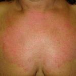

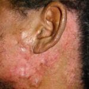

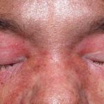

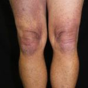

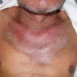

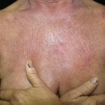

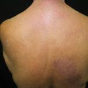

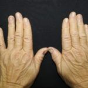

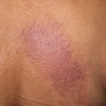

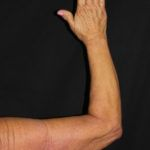

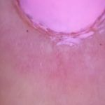

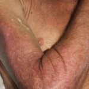

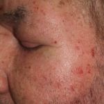

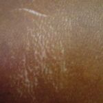

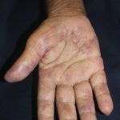

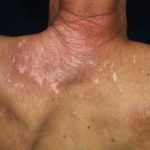

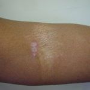

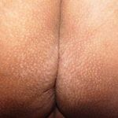

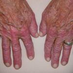

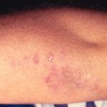

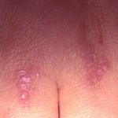

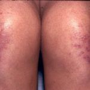

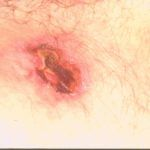

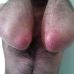

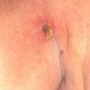

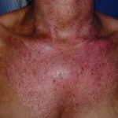

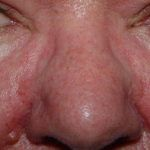

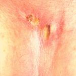

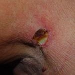

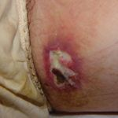

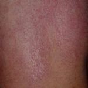

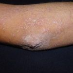

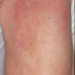

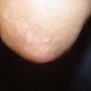

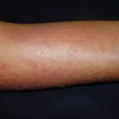

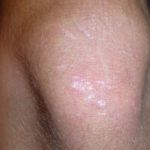

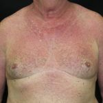

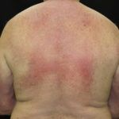

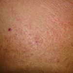

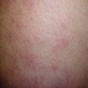
Na Skin Prime
Como podemos ajudar
Entre os recursos citados para Dermatomiosite, estes estão disponíveis na clínica:
Tratamentos
Diagnóstico